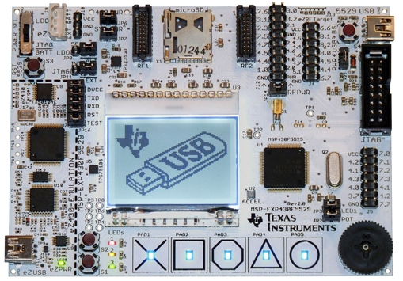
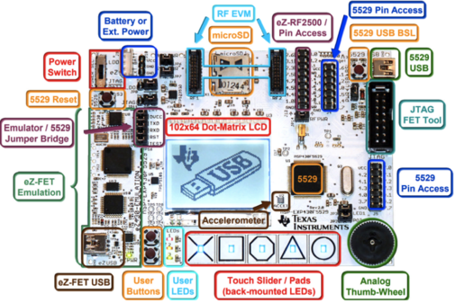

IIC2344 - Clase I
José Luis Honorato L.
jlhonora@ing.puc.cl
Aspectos generales
Créditos : 10Requisitos : Arquitectura de ComputadoresHorario : 13:30-16:50Sala de clases : Lab2000 (Edificio San Agustín, 2do piso al fondo)Sitio web del curso : Siding
Presentación
Notas de presentador aquí
Motivación
Microcontroladores/Sistemas Embebidos presentes en muchos dispositivos
Es necesario conocer su arquitectura para controlar entradas y salidas
Aprender a controlar un computador a bajo nivel
Objetivos
Conocer la arquitectura de un microcontrolador convencional
Manejar puertos, entradas, salidas
Controlar periféricos
Metodología
Experiencias de 1 a 4 semanas enfocados en cierto tema
Trabajo personal y en grupo
Entregas preliminares y finales
Informe al final de cada experiencia, máximo 10 páginas
Proyecto final
Metodología - Evaluación
Nota experiencias:
25% Trabajo en el laboratorio
45% Funcionamiento
30% Informe
Nota final:
NX: Nota Experiencias, NP: Nota Proyecto
NF = 0.75*NX + 0.25*NP si NX>=4 y NP>=4
NF = min(NX, NR) si NX < 4 o NP < 4
Metodología

Placa msp-exp430f5529
Basada en microcontroladores msp430 de TI
Metodología

Varios periféricos
Véanlas ustedes...
Cómo la hacemos funcionar?
Programamos el firmware
Compilamos con MSPGCC (gcc)
Instalamos con MSPDEBUG (gdb)
Cómo la hacemos funcionar?
Programamos el firmware
3 documentos importantes:
Family guide: Descripción de la "familia" de microcontroladores (familia 5)
Datasheet: Descripción y distribución específica para el microcontrolador de la placa (msp430f5529)
Design files: Esquemático o "plano" de la placa
Cómo la hacemos funcionar?
Programamos el firmware
#include <msp430.h> // Definiciones de puertos, etc .
int main(void) {
WDTCTL = WDTPW + WDTHOLD; // Paramos WDT
P1SEL &= ~BIT0; // Pin 1.0 como IO
P1DIR |= BIT0; // Pin 1.0 como salida
P1OUT |= BIT0; // Pin 1.0 en 1
LPM3; // Modo de bajo consumo
return 0;
}
Cómo la hacemos funcionar?
Compilamos y linkeamos con MSPGCC (gcc) y rake
$ rake
Compiling main.c...
Linking binary for msp430f5529...
bin.elf and bin.ihex succesfully generated!
Cómo la hacemos funcionar?
Instalamos con MSPDEBUG (gdb)
$ sudo mspdebug rf2500 prog "bin.elf"
Herramientas
Debug con GDB
Abrir mspdebug sin comandos: sudo mspdebug rf2500
En mspdebug, correr el comando gdb
En otra pestaña, abrir GDB: msp430-gdb --tui bin.elf
En GDB, correr: target remote localhost:2000
Debuggear en hardware tiene desventajas: hay eventos que no se pueden dejar pasar, hay componentes que necesitan cierto tiempo de estabilización, etc.
Herramientas
Debug con GDB - Comandos
continue Corre el programa desde la posición actualbreak main Breakpoint en la función main. También se puede usar en interrupciones.step Entra a la funciónnext Ejecuta la línea actual y avanza a la siguiente línealist main.c:5 Imprime 10 líneas del archivo main.c empezando desde la línea 5print var Imprime el valor actual de varPara más comandos, revisar este Cheat Sheet
Herramientas
Linux
// Mostrar todos los archivos y carpetas del directorio
$ ls
// Moverse a la carpeta src/
$ cd src/
// Crear una nueva carpeta
$ mkdir nueva_carpeta
// Buscar (recursivamente) el keyword P1OUT
$ grep -nr P1OUT .
// Reemplazar el keyword P1OUT por P1_OUT
$ grep -lre P1OUT . | xargs sed -i 's/P1OUT/P1_OUT/g'
// Buscar (recursivamente) todos los archivos con extensión .c
$ find . -name "*.c"
Herramientas
Github
// Copiar repositorio del curso
$ git clone https://jlhonora@bitbucket.org/jlhonora/labarqui.git
// Para hacer su propio repositorio, revisar las instrucciones
// de Bitbucket o Github. Los comandos más comunes son:
$ git add .
$ git commit -m "Commit inicial"
$ git push
Pasos a seguir
Conseguir linux y correrlo en su PC (vmware u otro para virtualizar)
Instalar mspgcc y sus herramientas
Instalar rake
Bajar el repositorio del curso
Compilar e instalar el ejemplo visto en clases